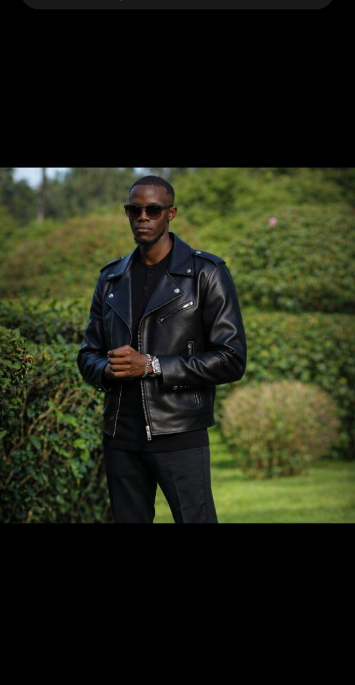

I am a results-driven Full-Stack Web Developer and ICT Support Specialist with a strong background in system development, networking, and technical troubleshooting. I build modern, responsive websites and web applications that are both functional and user-focused. With hands-on experience in real-world IT environments, I bring problem-solving skills, attention to detail, and a commitment to delivering high-quality digital solutions.

I am a Computer Technology graduate and Full-Stack Developer with hands-on experience in system design, web development, and ICT support. I specialize in building practical, real-world solutions that integrate both software and hardware, ensuring systems are efficient, secure, and reliable.
I have worked on projects involving web application development, network configuration, hardware troubleshooting, and system integration. Notably, I have designed and implemented systems that combine technologies such as RFID, biometric authentication, sensors, and cloud-based data storage, demonstrating my ability to handle complex, end-to-end solutions.
I have developed strong skills in IT support, infrastructure setup, and maintenance, including configuring routers and switches, setting up workstations, and resolving technical issues in real time during my academic internship, and I am confident working independently or as part of a team to deliver high-quality results under pressure.
I am a detail-oriented and results-driven professional with a strong problem-solving mindset and a passion for continuous learning. My goal is to grow into a highly skilled technology expert while building innovative systems that solve real-world challenges and improve efficiency in organizations.
Read MoreI design intuitive, user-centered interfaces that enhance user experience and ensure seamless interaction between users and digital systems. My approach focuses on understanding user needs, simplifying complex processes, and creating visually appealing designs that are both functional and engaging.
I work on wireframing, prototyping, and interface design, ensuring that every product is responsive, easy to navigate, and optimized for performance across different devices. By combining design principles with technical knowledge, I create solutions that not only look good but also work efficiently in real-world environments.
I develop responsive and visually engaging user interfaces that provide a seamless experience across all devices. I focus on creating clean, modern designs using best practices to ensure fast loading speeds, accessibility, and smooth user interaction.
I work with technologies such as HTML, CSS, JavaScript, and modern frameworks to build dynamic and interactive web applications. My goal is to translate design concepts into functional, high-performing interfaces that enhance user experience and meet business needs.
I develop robust and scalable backend systems that power web applications and ensure smooth data processing and functionality. I focus on building secure, efficient, and well-structured systems that handle user requests, manage databases, and support application performance.
I have experience working with server-side logic, databases, APIs, and system integration, enabling seamless communication between the frontend and backend. My approach ensures reliability, security, and scalability in every system I develop.
I design and develop integrated systems that combine software, hardware, and networking to solve real-world problems. My approach focuses on building reliable and efficient systems by carefully analyzing requirements, selecting appropriate technologies, and ensuring seamless interaction between components.
I have experience working on projects involving automation, embedded systems, and system integration, including the use of sensors, microcontrollers, and cloud-based platforms. I ensure that every system is scalable, secure, and optimized for performance.
I provide comprehensive ICT support services, ensuring smooth operation of IT systems and infrastructure. I specialize in troubleshooting hardware and software issues, system maintenance, and user support, helping organizations maintain productivity and minimize downtime.
With hands-on experience in real-world environments, I am skilled in installing, configuring, and maintaining computer systems, printers, and IT equipment. I am committed to delivering fast, reliable, and user-focused technical support.
I design, configure, and maintain network systems to ensure secure, stable, and high-performance connectivity. I have experience in setting up LAN/WAN networks, configuring routers and switches, and troubleshooting network issues.
My focus is on building networks that are efficient, scalable, and secure, supporting seamless communication and data transfer within organizations. I ensure proper network setup, monitoring, and optimization to minimize downtime and improve performance.
I create visually compelling designs that communicate ideas clearly and effectively. My work focuses on branding, marketing materials, and digital graphics that capture attention and deliver strong visual impact.
I combine creativity with design principles such as color theory, typography, and layout to produce designs that are both aesthetically appealing and purposeful. Whether it’s social media graphics, posters, or branding elements, I ensure consistency and quality in every project.
I edit and produce high-quality videos that are engaging, professional, and tailored to the intended audience. My focus is on storytelling, smooth transitions, and clean visual presentation to deliver compelling content.
I work on cutting, trimming, adding effects, sound, and transitions to create videos suitable for social media, marketing, and presentations. I ensure that every video is well-structured, visually appealing, and communicates the intended message effectively.
N/A
N/A
N/A